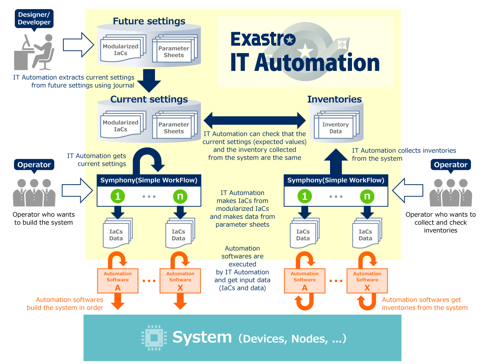
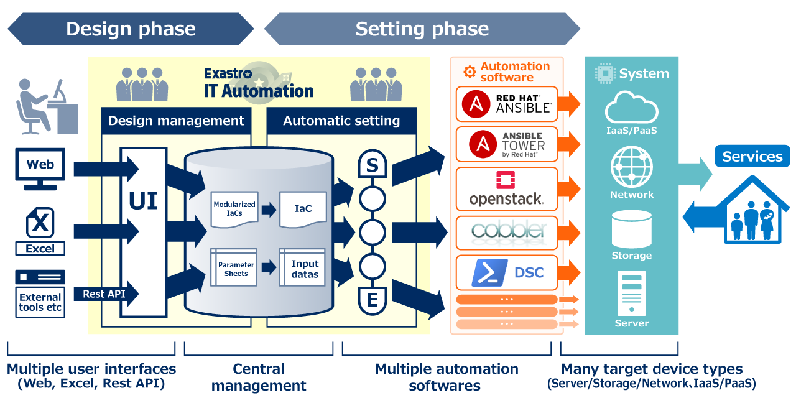

System life cycle using Exastro IT Automation

Exastro IT Automation Overview

Centrally manage IaCs and parameters from multiple user interfaces
With IT Automation you can centrally manage the parameters to be input into the system using IT Automation's web user interface, spreadsheets (Excel), or a machine interface (Rest API).
Modularizing and managing IaCs for improved reusability
IT Automation helps you to modularize and manage IaCs.
When you use IT Automation to build a system automatically, IT Automation joins together the modularized IaCs to create a workflow, and combines that workflow with the parameters to execute.
This allows you to take generic IaCs, modularize them, and reuse them in various workflows.
Automation software execution management with Exastro IT Automation
The IaCs that make up the workflow are executed by appropriate automation software, such as ANSIBLE. You can choose which automation software to use based on the system integration you want to execute and the features of the automation software.
Real-time monitoring of execution status by Exastro IT Automation
You can monitor the execution status of automation software in real time using IT Automation's interface.
A hold point can be placed in the middle of your workflow and you can also perform an emergency stop if an unexpected event occurs during workflow execution.
IT Automation generates execution logs and reports failed or successful executions.
Applied usage
Acquisition and collection of system inventories
Inventories acquired using automation software IaCs can be automatically collected by IT Automation.
IT Automation can be used for IT asset management.
Using Exastro IT Automation for system inventory validity checks
You can use IT Automation to manage the generation of system settings you want to set in the future.
Expected current system settings can be extracted from the parameter history and checked to confirm that they match the inventories collected from the system.